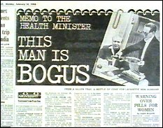
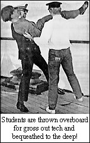
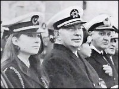
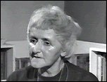

CHAPTER
THREE
The Empire Strikes
Back
I find it
almost incredible that a Minister and his civil servants should be
so reckless as to publish a White Paper and to seek mercilessly to
expose the Scientologists. It will certainly advertise them even
more widely and give them the fame they want.
- RICHARD CROSSMAN,
The Diaries of a Cabinet Minister, Volume
3 On July 25, 1968, Kenneth Robinson, the
British Minister of Health, made a statement in Parliament about
Scientology. Having called it a "pseudo-philosophical
cult," he reminded the House of his earlier pronouncement:
Although this warning received a
good deal of public notice at the time, the practice of
scientology has continued, and indeed expanded, and Government
Departments, Members of Parliament and local authorities have
received numerous complaints about it.
The Government is satisfied...
that scientology is socially harmful. It alienates members of
families from each other and attributes squalid and disgraceful
motives to all who oppose it; its authoritarian principles and
practice are a potential menace to the personality and well-being
of those so deluded as to become its followers; above all, its
methods can be a serious danger to the health of those who submit
to them. There is evidence that children are now being
indoctrinated.
There is no power under
existing law to prohibit the practice of scientology; but the
Government has concluded that it is so objectionable that it would
be right to take all steps within its power to curb its growth.
Scientology establishments in Britain
were stripped of their educational status. Foreign nationals were
prohibited from studying Scientology or working in Scientology
Organizations, by invoking the "Aliens Act," through
which the Home Secretary can deny entry to Britain. The Home
Office banned Hubbard from Britain as an "undesirable
alien." East Grinstead's Member of Parliament, Geoffrey
Johnson Smith, repeated Robinson's earlier statement, originally
made in Parliament, that Scientologists, "direct themselves
towards the weak, the unbalanced, the immature, the rootless and
the mentally or emotionally unstable." He made the statement
on television, beyond the bounds of parliamentary privilege, so
the Scientologists filed suit against him for defamation. 1
At the end of July, a hundred
foreign Scientologists were rounded up, and detained under guard
in hotels, pending deportation. Scotland Yard began to investigate
Scientology. The National Council for Civil Liberties objected to
the use of the Aliens Act on the grounds that it was
"objectionable in principle and dangerous in practice."
2
The Scientologists sued four
English newspapers, and sought injunctions to prevent further
stories. The injunctions were denied. New telephone directories
carried a large advertisement for Scientology, and an embarrassed
General Post Office announced that no further ads would be
accepted. 3
There was a general feeling
that although something should be done about Scientology the
Aliens Act was not the way to do it. But the expression of public
sympathy was restrained. A fortnight before the ban, the Daily
Mail had reported the death of ex-Scientologist John Kennedy,
in South Africa. Kennedy had left Scientology to set up his own
Institute of Mental Health, taking a number of Scientologists with
him. He allegedly shot himself accidently while cleaning his
revolver, but the coroner returned an open verdict. Hubbard's
Auditor magazine recorded the matter simply, and
ominously: JOHN KENNEDY, SP [Suppressive
Person], who messed up Rhodesia, shot dead in accident in South
Africa. 4
This was
actually stale news, Kennedy died in 1966, but three days after
the Aliens Act was introduced, another South African Scientologist
died in mysterious circumstances. James Stewart had been a student
at the Scientology Advanced Organization in Edinburgh. He was a
thirty-five-year-old epileptic, whose body was found fifty feet
beneath his hotel window. The newspapers missed vital information
in their reports. A few days before his death, Stewart had
completed an Ethics Condition wherein he stayed awake for eighty
hours. One of his tasks during this period was to crawl about the
carpets picking out bits of fluff. According to Robert Kaufman, in
his firsthand account, a bulletin had been posted on the Advanced
Org notice board: 5
James
Stewart has been put in a Condition of Doubt for having
[epileptic] seizures in public thus invalidating Scientology. If
there is any reoccurrence of these either consciously or
unconsciously on his part he will be placed in a Condition of
Enemy. Stewart's real crime, having had a
severe seizure, was telling the hospital that he was a
Scientologist, thus supposedly giving Scientology a bad name. He
had injured his head, and wore a blood-stained bandage while
performing his demeaning "amends project." He was
possibly made to crawl across the steep and slippery slates of the
Org roof, as a final part of his Doubt Formula. This bizarre
practice was quite usual at the time. 6
Shortly before his death,
Stewart had been suspended from his course at the AO. On the day
he read a funeral notice for Stewart, fellow student Robert
Kaufman saw Stewart's widow, Thelma, giving an enthusiastic speech
on her completion of OT 2. In his book, Inside
Scientology, Kaufman said Thelma "victoriously received
the applause of AO members." A Scientology spokesman told the
press, "Mrs. Stewart does not know how it happened, but she
does know it had nothing to do with Scientology." The press
was also told that Mrs. Stewart was a "more serious"
student than her husband. In fact, Stewart, described in the
newspapers as an encyclopedia salesman, 7 had been a
founder of the Cape Town Scientology Org, and was a senior
executive there. He was a Class VII Auditor, the highest level of
training at the time, Clear number 153 (there were over 2,000 by
then), and was on OT 3 when he died. One of his Success Stories
was published in the Auditor magazine at around the time
of his death. It was headed, "How Scientology Training Has
Helped Me In Life": I find that training and
auditing experience helps me in innumerable ways - in driving a
car (patiently, in heavy traffic), waking up in the morning,
confronting anything unpleasant in life, keeping myself occupied
in leisure hours, in writing letters, making telephone calls, in
chance conversations with strangers - In fact, training helps in
every conceivable situation or experience anywhere, any place,
anytime - Try it for yourself and see!
The
Scientologists very readily disown embarrassing members,
especially in death. Unfortunately, to them the repute of
Scientology is invariably more important than the truth. In a
curious twist, Stewart's name was given to the press by the
police. In Scotland, the names of suicides were not given to the
press. However, there is no evidence to suggest that Stewart was
murdered. This
bizarre period of Scientology is recorded in stark detail in
Robert Kaufman's Inside Scientology. Kaufman was the
first who dared to publish details of the OT levels, and his book
remains the best description of the Scientology
experience. The
response to the British Aliens Act ban was fairly immediate.
Hubbard announced that his work was finished, saying he had
resigned his "Scientology directorships two or more years ago
to explore and study the decline of ancient civilization,"
perpetuating the tale he had told to receive his Explorers' Club
flag. Hubbard accused England of being a police state. 8 An
Advanced Org was started in Los Angeles to serve Scientologists in
the Western hemisphere. But the ban, although rigorously enforced
at first, soon fell into disuse. By the early 1970s, most of the
students and staff at Saint Hill were foreigners.
 The London Daily Mail
(right) published details of Hubbard's private bank
accounts in Switzerland, account numbers and all. It said Hubbard
claimed to have $7 million. It also unearthed a prescription
signed "L. Ron Hubbard Ph.D.," for the sedative
Nembutal, "for horticultural purposes only." Abbott
Laboratories, the manufacturers of Nembutal, said there was
"no conceivable" way in which Nembutal could be used in
horticulture. Perhaps it was for Hubbard's
"ever-bearing" tomatoes. 9
Hubbard was interviewed by the
Daily Mail, aboard the Royal Scotman, in
Bizerte, Tunisia: "He chain-smoked menthol cigarettes,
fidgeted nervously .... He taped the conversation .... Outside
Scientologists, some in uniform and some young children, stood
rigidly to attention .... Hubbard's mood ranged from the boastful
- 'You'd be fascinated how many friends of mine there are in the
British Government' to the menacing: 'I get intelligence reports
from England. You'd be surprised at the dirty washing I have got.'
" 10
Hubbard insisted he was no
longer connected with Scientology, and told the reporter that
everything in the Daily Mail's Scientology file was forged. He
knew because he had seen it, through his "spies."
Hubbard also gave a rare interview to British television, again
looking nervous, and contradicted himself both on the number of
his marriages, and whether or not he had a Swiss bank account.
Despite his supposed discoveries about communication and public
relations, Hubbard fell far short of winning over the press. 11
At the end of August 1968 in
New York, Jill Goodman became the world's youngest Clear. Her
picture was featured in the Auditor magazine. She was ten
years old, and she and her eight-year-old brother were already
qualified Auditors. 12
In mid-August, the Royal
Scotman had slipped into Corfu harbor. At first all went
well. According to one newspaper, the Sea Org enriched the Corfiot
economy by about £1,000 per day. They were welcomed by the
harbormaster, and the local press. 13
 In September, Hubbard announced the new
Class VIII Auditor Course, in the Auditor magazine. The
announcement was accompanied by a center spread of Hubbard's
photographs. There is a shot of an Ethics Officer, carrying a
heavy wooden baton, wearing dark glasses and full uniform, and
scowling at a student who is smiling back, apprehensively. The
caption reads: "No one can fool a Sea Org Ethics Officer. He
knows who's ethics bait." Another shot shows a Sea Org member
suspended in mid-air by two Ethics Officers, one wearing a broad
grin. He is about to be thrown over the rail, into the sea. The
caption reads: "Students are thrown overboard for gross out
tech and bequeathed to the deep!" "Out tech" is a
Hubbardism for "misapplication of Scientology auditing
procedures." The editor of Auditor 41 thought the
photos were a Hubbard joke. Hubbard was deadly serious. 14
Every Scientology
Org was ordered to send two Auditors to be trained as "Class
VIIIs." As "VIIIs" their auditing would be
"flubless." The course would take three weeks, so
previous Ethics procedures were of little use - they took too long
to administer. Rather than languishing in the chain-locker for a
week, or doing three days without sleep on "amends
projects," students were to be subject to "instant
Ethics," or overboarding. There is no doubt that Hubbard
ordered this (one ex-Sea Org officer says Hubbard even took out
his home movie camera and filmed it once or twice). 15
Scientologists who joined
after 1970 are often unaware that overboarding took place. Most
who have heard of it, and those who were subjected to it, dismiss
it as a passing phase; unpleasant, but no longer significant.
People who experienced it often shrug it off, and even insist that
it was "research." It can take persistence to extract an
admission of the reality of overboarding. Students and crew were
lined up on deck in the early hours every morning. They waited to
hear whether they were on the day's list of miscreants. Those who
knew they were would remove their shoes, jackets and wristwatches
in anticipation. The drop was between fifteen and forty feet,
depending upon which deck was used. Sometimes people were
blindfolded first, and either their feet or hands loosely tied.
Non-swimmers were tied to a rope. Being hurled such a distance,
blindfolded and restrained, into cold sea water, must have been
terrifying. Worst of all was the fear that you would hit the side
of the ship as you fell, your flesh ripped open by the barnacles.
Overboarding was a very traumatic experience. 16
The course lectures too seem
to have been a traumatic experience for many. Hubbard lectured
from a spotlit dais, surrounded by the female Commodore's Staff
Aides in flowing white gowns. The lectures were peppered with the
old easygoing manner, but punctuated with tablebanging and bouts
of yelling. Later, some of Hubbard's tantrums were edited from the
tapes of the lectures. The lectures were "confidential,"
and only fully indoctrinated Scientologists could attend.
Students wore
green boiler-suits, and, after a certain point on the course,
added a short noose of rope around their necks as a mark of honor.
They had little time for sleep, and were inevitably extremely
cautious in their auditing. If they made a mistake, it was
"instant Ethics," and they were heaved over the side.
17
Hubbard published the purpose
of the Class VIII course: "It's up to the Auditor to become
UNCOMPROMISINGLY STANDARD . . . an uncompromising zealot for
Standard Tech." Sea Org "Missions" were dispatched
from Corfu to all corners of the world to bully Org staffs into
higher production. Hubbard pronounced that such
"Missions" had "unlimited Ethics powers."
18
Alex Mitchell of the London
Sunday Times reported that a woman with two children had
run screaming from the ship, only to be rounded up and returned by
her fellow Scientologists. The journalist also said that
eight-year-old children were being overboarded:
Discipline
. . . is severe. Members of the crew can be officers one day and
swabbing the decks the next. Status is conferred by Boy Scout-like
decoration; a white neck tie is for students, brown for petty
officers, yellow for officers, and blue for Hubbard's personal
staff .... Recently the crew decided to paint the water tanks.
Unwilling to give the job to local contractors the Scientologists
did it themselves - only to find that when they next used their
taps the water was polluted with paint. 19
Kenneth Urquhart
joined the ship at Corfu. From Hubbard's butler he had risen to
become a senior executive at Saint Hill. He had resolutely avoided
joining the Sea Org, but was finally cajoled into travelling to
Corfu. He was amazed at the change in Hubbard. At Saint Hill he
had seen him every day. Although Hubbard occasionally lost his
temper, Urquhart had only once seen him quivering with rage. Now
screaming fits were a regular feature. OT 3 and the Sea Org had
transformed Hubbard. Amid the turmoil, and with the pressure
of the UK ban, and swathes of bad press, Hubbard cancelled
enforced Disconnection. The practice of labelling an individual
Fair Game was also cancelled: 20
FAIR GAME
may not appear on any Ethics Order. It causes bad public
relations. This Policy Letter does not cancel any policy on the
treatment or handling of an SP [Suppressive Person].
Shortly after arriving in Corfu,
Hubbard had issued a Bulletin to Scientologists abolishing
Security Checks and the practice of writing down Preclears'
misdeeds. 21 In point of
fact the name of Security Checking was changed: first to Integrity
Processing and then to Confessional Auditing. However, the Sec
Check lists of questions written by Hubbard in the 1960s remained,
and are still in use. A record of the Preclear's utterances during
an auditing session is made by the Auditor, and kept by the Org he
works for.  Many Corfiots seem to have accepted
overboarding, and on November 16, Hubbard was a welcome guest at a
reception at the Achillion Palace. With the notable exception of
the Prefect, most of the island's worthies attended. The following
day, with as much pomp as the Sea Org could muster, the Royal
Scotman was renamed yet again, this time deliberately. Diana
Hubbard (on far left of picture), who had just celebrated
her sixteenth birthday, and been awarded the rank of Lieutenant
Commander, broke a bottle of champagne over the Scotman's
bow, and the ship became the Apollo. In the same
ceremony, the Avon River was restyled the
Athena. The Enchanter had already been renamed
the Diana, but was included in the ceremony nonetheless.
All was not well
on the Scientology home front, in England. An application to local
authorities for permission to expand Saint Hill castle had been
denied. The Scientologists were ordered to pay the legal costs of
three of the newspapers they were suing before they could proceed.
The son of Scientology spokesman David Gaiman was refused a place
at an East Grinstead school until Scientology had cleared its
name. Foreign Scientologists posed as tourists to attend a
Congress in Croydon, to evade enforcement of the Aliens Act.
Gaiman said, "They disguised themselves as humans." It
was fair comment. 22
The English High Court refused
to rule against the Home Office's use of the Aliens Act. The
Scientologists fought back with more than forty court writs issued
for slander or libel on a single day. The Rhodesian government, which had
refused to renew Hubbard's visa in 1966, introduced a ban on the
importation of material which promoted, or even related to, the
practice of Scientology. The states of Southern and Western
Australia joined Victoria in banning Scientology totally. The Sea
Org seemed to have put to sea just in time. The Western Australian
"Scientology Prohibition Act" was far more succinct than
that of Victoria: 1. A person shall not practice
Scientology. 2. A person shall not, directly or indirectly, demand
or receive any fee, reward or benefit of any kind from any person
for, or on account of, or in relation to the practice of
Scientology. Penalty: for a first offence two hundred dollars and,
for a subsequent offence, five hundred dollars or imprisonment for
one year or both. The Scientologists' response to the
bans was in character: The year of human rights draws
to its close. The current English Government celebrated it by
barring our foreign students, forbidding a religious leader to
enter England, and beginning a steady campaign intended to wipe
out every Church and Churchman in England. The hidden men behind
the Government's policies are only using Scientology to see if the
public will stand for the destruction of all churches and
churchmen in England .... Callaghan, Crossman and Robinson follow
the orders of a hidden foreign group that recently set itself up
in England, which has as its purpose the seizure of any being whom
they dislike or won't agree [sic], and permanently
disabling or killing him. To do this they believe they must first
reduce all churches and finish Christianity. Scientology
Organizations will shortly reveal the hidden men . . . [with] more
than enough evidence to hang them in every Country in the West.
The public seemed perfectly willing to
witness the destruction of Scientology. Neither the promised
exposure of the "hidden men" nor the destruction of
"all churches and churchmen" ensued. Instead, David
Gaiman, head of the Public Relations Bureau of the Guardian's
Office, issued a "Code of Reform." The severe
puritanical and punitive approach was no longer necessary. The
Church was going to become a moderate and liberal organization,
which would continue its battle against the evils of psychiatry
(spokesmen are trained to attack psychiatry as a response to any
criticism of Scientology). Thirty-eight libel suits were dropped.
And while the press and governments were being assured of this new
liberal attitude, the new Class VIIIs were returning to their Orgs
and instituting their own forms of overboarding. 23
In the Edinburgh Advanced Org,
the miscreant was thrown into a bath of hot, cold or dirty water.
In Los Angeles, he or she would be hosed down fully clothed in the
parking lot, though later a large water tank was used. John
McMaster has said that in Hawaii the offender's head would be
pushed into a toilet bowl, and the toilet flushed. The same
technique was used in Copenhagen. In the Advanced Orgs in Edinburgh and
Los Angeles, staff were ordered to wear all-white uniforms, with
silver boots, to mimic the Galactic Patrol of seventy-five million
years before. According to Hubbard's Flag Order 652, mankind would
accept regulation from that group which had last betrayed it. So
the Sea Org were to ape the instigators of the OT 3 incident. By
the same token, all the book covers were revised to show scenes
from the supposedly lethal incident. "Captain" Bill Robertson, who
introduced the uniforms to both Edinburgh and Los Angeles, also
ordered a nightwatch in Los Angeles. The crew assembled on the
roof every night to watch for the spaceships of Hubbard's enemies.
"Captain" Bill has continued his crusade against the
invading aliens, the "Markabians," into the 1990s.
In Britain, in
January 1969, Sir John Foster was appointed to conduct an Inquiry
into Scientology. In Perth, Australia, police raided the local
Org, and fourteen individual Scientologists, and the Hubbard
Association of Scientologists International, were prosecuted for
"practising Scientology." In New Zealand in February,
another Inquiry got underway. Hubbard was still trying to ingratiate
himself with the military junta which controlled Greece. He
applauded them in a press interview saying "the present
Constitution represents the most brilliant tradition of Greek
democracy." To win favor, Hubbard announced the formation of
the Help Greece Committee which issued a promotional piece for a
"University of Philosophy in Corfu." He boasted that
"Most professors of psychology and schools of psychology
foresee as part of their lessons [the] subject of dianetics and
scientology." The symbol of the Help Greece Committee
was a Greek Orthodox cross set at the center of the
thirteen-leaved laurels of the Sea Organization. This was not a
tactful gesture; Bishop Polycarpos was already concerned about the
spiritual influence of Scientology. The British Vice-Consul, John
Forte, was more concerned with the material influence of
Scientology. He had been receiving complaints since the
Scientologists arrived. He later published a booklet called
The Commodore and the Colonels describing his
experiences. Forte became interested in several defections from
the Apollo, including that of William Deitch, who
disappeared completely. Early in March 1969, a detachment of U.S.
Marines arrived. Colin Craig met a group of them, and described
life aboard a Scientology ship. The Marines insisted that he tell
his story to the British Vice-Consul immediately.
Craig and another Belfast man,
Jack Russell, had answered an advertisement for maintenance
fitters. Arriving on Corfu, they were assigned to the
Apollo's fifteen-year-old Chief Engineer. Russell was
attracted to Scientology, but Craig was so alarmed that he feigned
illness and locked himself in his cabin. With Forte's assistance
they were both repatriated. While this was taking place, Hubbard
announced that Scientology was "going in the direction of
mild ethics and involvement with the Society. After nineteen years
of attack by minions of vested interest, psychiatric front groups,
we developed a tightly disciplined organizational structure... we
will never need a harsh spartan discipline for ourselves."
24
The Greek government,
concerned by the many complaints it had received, peremptorily
ordered the two hundred or so Scientologists on Corfu to leave
Greek territory. Protests were made that the Apollo was
not seaworthy, so the ship was inspected, and declared fit for a
voyage in the Mediterranean. The flagship Apollo was
given twenty-four hours to leave Greek waters. She left on March
19, ostensibly for Venice. Two days later a young Scientologist
arrived, and introduced himself to Vice-Consul Forte. When asked
why the Apollo had left, Forte simply handed him
Hubbard's printed explanation. The departure was "due to
unforeseen foreign exchange troubles and the unstable middle
eastern situation." Forte discovered many years later that
the Scientologist had subsequently burgled both his office and his
villa looking for evidence of Forte's involvement with the
Conspiracy. Soon
afterwards, an Inquiry started in South Africa. Hubbard turned his
back on the "wog" world, and concentrated on introducing
a new form of Dianetics, and integrating it into the Scientology
"Bridge." He issued a bizarre order to the Sea Org,
called "Zones of Action," which outlined his plans.
Scientology was going to take over those areas controlled by
Smersh (the evil organization fought by the fictional James Bond),
rake in enormous amounts of cash, clean up psychotherapy,
infiltrate and reorganize every minority group, and befriend the
worst foes of the Western nations. Hubbard's stated intention was
to undermine a supposed Fascist conspiracy to rule the world.
On June 30, 1969,
the New Zealand Commission submitted its report. Their attitude to
Scientology was sensible. Rather than banning, fining or
imprisoning Scientologists, they recommended the cessation of
disconnection and Suppressive Person declares against family
members. Further, they recommended that no auditing or training be
given to anyone under twenty-one, without the consent of both
parents (including consent to the fee), and a reduction of the
deluge of promotional literature and prompt discontinuance when
requested. The
Commission recommended that no legislative action be taken.
However, it found "clear proof of the activities, methods,
and practices of Scientology in New Zealand contributing to
estrangements in family relationships . . . the attitude of
Scientology towards family relationships was cold, distant, and
somewhat uninterested . . . the Commission received a letter from
L. Ron Hubbard stating that the Board of Directors of the Church
of Scientology had no intention of reintroducing the policy [of
disconnection]. He also added that, for his part, he could see no
reason why the policy should ever be reintroduced .... This
undertaking does not go as far as the Commission had hoped... [it
was seen that] the activities, methods, and practices of
Scientology did result in persons being subjected to improper or
unreasonable pressures." Nonetheless, the New Zealand
Government did not outlaw the practice of Scientology. The tide
appeared to be turning. In July, the Church of Scientology
scored a victory of sorts in their long-running battle with the
Food and Drug Administration in the United States. In 1963, the
FDA had raided the Washington Org, seizing E-meters and books. The
whole affair had been in and out of the courts from that time. Now
a Federal judge ruled that although the E-meter had been
"mis-branded," and that its "secular" use
should be banned, it might still be used for "religious"
counselling, as long as it was carefully relabeled to indicate
that it had no curative or diagnostic capabilities. To this day
the Church of Scientology has never fully complied with the
relabeling order, but E-meters do carry an abbreviated version of
it. This was not the end of the FDA case, however.
Also in 1969, an Advanced
Organization was opened in Copenhagen. Now the OT levels were
available in England at Saint Hill (the Edinburg AO had moved
there), in Los Angeles, in Copenhagen, and aboard the
"flagship" Apollo. Up until this time the "First Real
Clear," John McMaster, had been the emissary of Scientology.
He had braved the incisive questioning of television interviewers,
and, overcoming much bad publicity, inspired many people to join
Scientology. He had even been sent as a Scientology representative
to the United Nations in New York by Hubbard, and managed to
secure interviews with several important people. In November 1969,
John McMaster resigned from the Church of Scientology. He felt
that the "Technology" of Scientology was of tremendous
value, but questioned the motives of those managing the Church,
most especially Hubbard. McMaster probably feared for his own
safety. He had been overboarded several times, and the last time
was left struggling in the water for three hours with a broken
collarbone. The
last straw for McMaster had been the brutal murder of three
teenagers in Los Angeles. Two had been Scientologists, the third
was disfigured beyond identification. The mutilated bodies were
left a hundred yards away from a house where Scientologists lived.
McMaster felt that this was an act of retribution for
Scientology's duplicity. A few weeks later, The New York
Times revealed that Charles Manson had been involved in
Scientology. Internal Scientology documents show that Manson had
actually received about 150 hours of auditing while in prison.
There was a cover-up by the Guardian's Office, which successfully
concealed the extent of Manson's considerable involvement.
In 1970, the
Ontario Committee on the "Healing Arts" pronounced:
"With no other group in the healing arts did the Committee
encounter the uncooperative attitude evinced by the Church of
Scientology... the public authorities in Ontario ... should keep
the activities of Scientology under constant scrutiny."
However, no recommendations were made for the proscription of
Scientology. In
November that same year, the Scientologists' libel case against
Geoffrey Johnson Smith, East Grinstead's Member of Parliament,
finally came to court. The Church produced several impressive
witnesses. William Benitez had spent most of his adult life in
prison for drug offences by the time he encountered Scientology.
His life had been transformed, he had overcome his drug habit, and
set up Narconon to help others do the same. Sir Chandos
Hoskyns-Abrahall, the retired Lieutenant Governor of Western
Nigeria, said of his own involvement in Scientology: "I
thought at first there might be something in it. I ended up
convinced there was everything in it." But the most startling witness was
Kenneth Robinson's former parliamentary private secretary. William
Hamling was the Member of Parliament for Woolwich West, and had
decided to find out about Scientology for himself. He used the
most direct method: going to Saint Hill and taking a Communication
Course. In the witness box, Hamling called the course "first
rate." He said the Scientologists he had met were normal,
decent, intelligent people. He had received auditing, and, in
fact, continued in Scientology after the court case.
 Geoffrey
Johnson Smith was on the witness stand for six days, and Kenneth
Robinson also made an appearance. But the focal witness was Hilary
Henslow (right), mother of the schizophrenic girl who had
been abandoned by Scientology. Instructing the jury Mr. Justice Browne
said, "You may think that Mrs. Henslow picked up all the
stones thrown at her in the witness box, and threw them back with
equal force." He called the love-letters written by Karen
Henslow to her Scientologist boyfriend "quite
heartbreaking," and added: "You may think it absolutely
disgraceful that these letters should have got into the hands of
the scientologists, or been used in this case... you have to give
those letters the weight that you feel right."
The case had lasted for
thirty-two days when the jury showed exactly what weight they gave
to the letters, and to the Scientologists. They decided that
Johnson Smith's statement - that Scientologists "direct
themselves deliberately towards the weak, the unbalanced, the
immature, the rootless, and the mentally or emotionally unstable'
'was not defamatory; was published "in good faith and without
malice"; and was "fair comment." The case had
backfired completely on the Scientologists. Costs, which The
Times newspaper estimated at £70,000, were awarded against
them. Spokesman David Gaiman said there would be no appeal.
The decision
seemed to have no effect on Hubbard, and two days later, he
blithely issued Flag Order 2673 to the Sea Org. It was called
"Stories Told," and explained that OTC, which ran the
ships, was actually involved in training businessmen, and that is
what Scientologists were to say if asked. The crew did tell this
"shore" story, avoiding any mention of Scientology. It
had become too controversial. So, another layer of deceit was
built into Scientology's approach to the "wog" world.
But the
Scientologists weren't the only people guilty of deceit. In the
U.S., devious actions against Scientology were underway. President
Nixon had put Scientology on his "Enemies List," and the
Internal Revenue Service began to make life difficult for
Scientologists. The CIA passed reports (some speculative and
inaccurate) on Scientology through U.S. consulates to foreign
governments. These underhand tactics all eventually backfired,
making sensible measures curbing the Church of Scientology's
abuses more difficult. 25
After only three years'
suspension, Scientology's hefty Ethics penalties were reintroduced
in 1971, unnoticed by the media, or by the governments which had
shortly before been so interested. 26 In December,
Sir John Foster submitted his report to the British Government. In
the introduction he said: Most of the Government measures
of July 1968 were not justified: the mere fact that someone is a
Scientologist is in my opinion no reason for excluding him from the
United Kingdom, when them is nothing in our law to prevent those
of his fellows who am citizens of this country from practicing
Scientology here. He further recommended that
"psychotherapy... should be organized as a restricted
profession open only to those who undergo an appropriate training
and are willing to adhere to a proper code of ethics."
Undoubtedly, the Scientology Ethics Conditions did not meet his
criteria for a "proper code." The Foster report was a
tour de force, patiently constructed, largely from Hubbard's own
statements. However, the British Government did nothing. The use
of the Aliens Act carried on, and foreign Scientologists continued
to study and work for Scientology in Britain by the simple
expedient of not declaring their philosophical persuasion when
they arrived. The Guardian's Office gave advice and assistance to
secure visas. One ex-Scientologist has joked that if the Home
Office had checked they would have realized there were over 100
people living in his small apartment. The treatment of crew aboard the ships
did improve in the early 1970s, but only after several years of
chain-locker punishments and overboarding. Nonetheless, the Sea
Org still worked an exhausting schedule, and obeyed Hubbard's
whims. At times he was patient, even tolerant, at other times a
bellowing monster. The kitchen staff were known as
galley-slaves. They worked disgraceful hours in the heat and
stench of the kitchens. In the summer of 1971, a tragic event
befell one of those galley-slaves. It is shrouded in mystery to
this day.
FOOTNOTES
Additional sources:
Rolph; the Auditor; Forte, The Commodore and the
Colonels; interviews with Chamberlin, O.R., Urquhart and
McMaster. 1. Foster report, para 14; Rolph,
pp.74ff 2. Evening News, 31 July 1968; Daily
Sketch, 31 July 1968; Daily Telegraph, 7 August
1968 3. Evening News, 1 August 1968
4.
Auditor 17, back page 5. The
Observer, 11 August 1968; Kaufman, pp. 195--6f; Cooper,
pp.81-2 6. Interview with Phil Spickler, Woodside,
California, October 1986 7. Kaufman;
The Observer, 11 August 1968; Auditor,
"Special South African Issue," c. summer 1968
8.
Daily Sketch, 2 August 1968 9. Daily
Mail, 3 August 1968 10. Daily
Mail, 6 August 1968 11. The
Shrinking World of L. Ron Hubbard, Granada Television,
1968 12. Auditor 43, pp. 2 & 4
13.
Playing Dirty p.75; Commodore and the Colonels,
p.19 14. Auditor 41 15.
Chamberlin to author, 1984 16.
Chamberlin to author, 1984; Commodare and the
Colonels 17. Interview McMaster; Interview
Chamberlin; Technical Volumes vol. 6, p.276
18.
Technical Volumes vol. 6, p.273; Organization
Executive Course 1, p.487 19.
Technical Volumes vol. 6, p.276 20.
Organization Executive Course 1, p.489
21.
Organization Executive Course 1, p.486
22.
Rolph, pp.63ff; Daily Telegraph & Daily
Mirror, 6 August 1968; Daily Sketch, 13 August 1968;
The People, 18 August 1968 23. Wallis,
p. 196; Daily Telegraph, 25 November 1968
24.
Wallis, p. 222 25. Playing Dirty, p.80;
CSC vs. IRS, 24 September 1984 26. HCOPL,
"Ethics Penalties Re-instated," 19 October 1971 (not in
Organization Executive Course). |